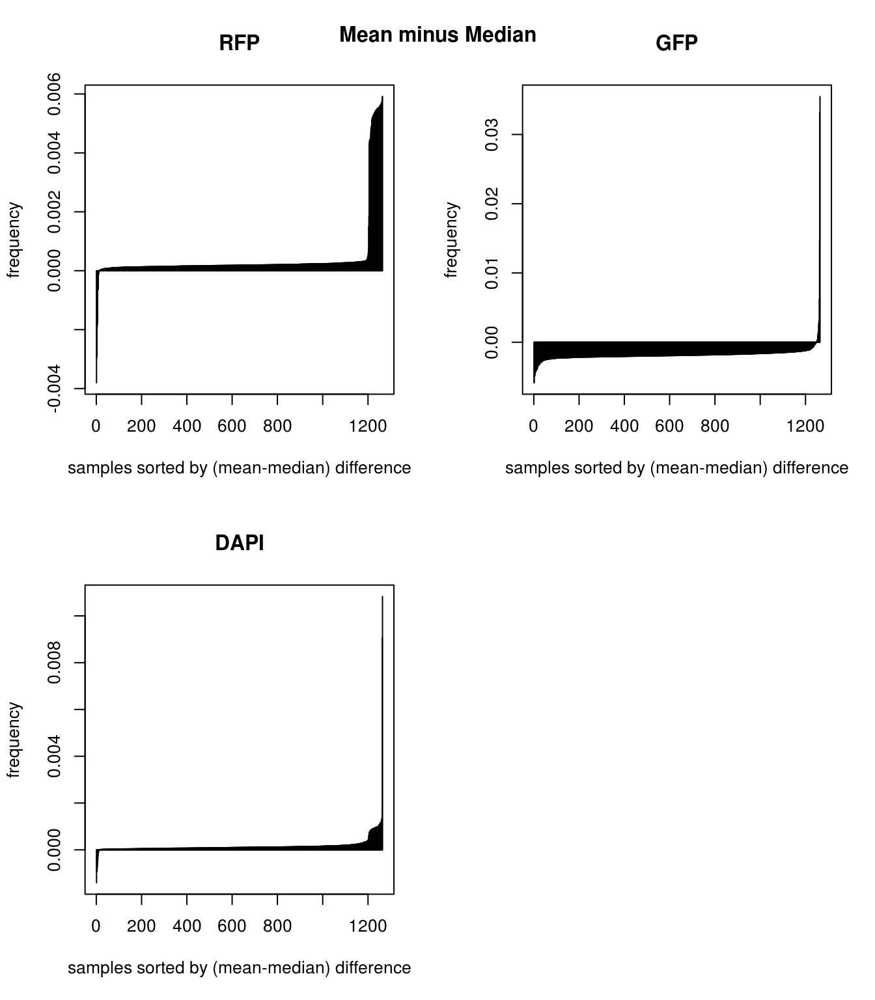
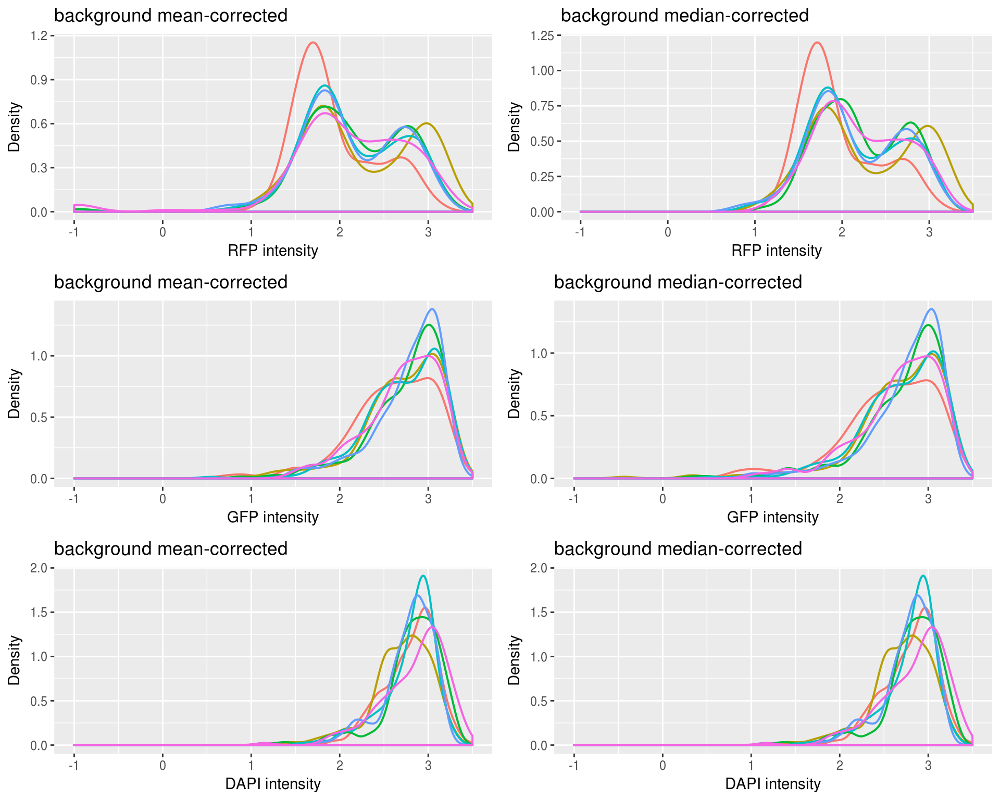

Last updated: 2017-12-11
Code version: aa65c7f
\(~\)
In our image analysis, after the initial denoising step (smooth, adaptive threshold), we identified nucleus location in each cell and use nucleus location to center the channel images.
The next step is to summarize intensities for pixels located at the foreground area and at the background area. Initially we considered foreground to be the area inside nucleus (identified by DAPI), but then we realized that the FUCCI proteins can also locate outside of the nucleus. So instead for GFP and RFP, we considered an area of fixed size across all samples (now arbitrarily defined as 100 x 100 pixels). We then compute the sum of pixel intensities in this area. For DAPI, we compute the sum of pixel intensities inside the nucleus.
\(~\)
Data:
Denote pixel intensity matrix as \(F\). We have \(I\) samples and \(J\) batches (C1 plates). \(F^{fore}_{ij}\) denotes pixels inside the forground area , and \(F^{back}_{ij}\) denotes pixels located at the background area. \(N^f\) and \(N^b\) denote number of pixels located in the foreground and background area, respectively. We correct for background intensity by substracting from each pixel the background mean or median intensity. Then we sum up the background-corrected intensities and then take log transformation of the sum. log transformation is frequently used in image transformation for increasing contrast of the image, especially for regions with low pixel intensity.
\[ log10 \sum_{(i,j) \in fore} \big( F_{ij}^{fore} - \frac{1}{N^b} \sum_{(i,j) \in back} F_{ij}^{back} \big) \]
\[ log10 \sum_{(i,j) \in fore} \Big( F_{ij}^{fore} - median_{(i,j) \in back}(F_{ij}^{back}) \Big) \] \(~\)
Results:
Mean versus median for background: Consider mean minus median, large values suggest a right-skewed distribution for the sample wherein there are a few high-intensity pixels in the background intensities, and small values suggest a left-skewed distribution wherein there are a few low-intensity pixels in the background intensities. Compare between the three channels, RFP has the largest number of samples with right-skewed distribution, suggest that for these samples, RFP background intensity is overestimated and influenced by high-intensity extreme values. On the other hand, GFP compared to RFP has larger number of samples with left-skewed distribution, suggesting that GFP background intensity is underestimated and influenced by low-intensity exterme value. In image terms, we say that RFP background is generally dark and hence likely to be influenced by a few high-intensity pixels; and, GFP background is generally bright and hence likely to be influenced by a few low-intensity pixels. Note that bright and dark here are on absolute scale; brightest = pixel intensity = 1, and darkes = pixel intensity = 0. In addition, we note that for DAPI, there’s not an obvious trend for more or less right-skewed or left-skewd intensity distribution.
Background mean-corrected versus median-corrected intensities: baased on our previous observation, it is not surprise that there’s little difference for DAPI channel between background-mean corrected versus background-median corrected intensity values. Furthermore, as expected, for RFP median-corrected intensity values are higher than mean intensity values, suggesting that median-corrected intensity correct for the under-estimation of background intensity in the mean-corrected intensity. And, for GFP median-corrected intensity values are lower than mean intensity values, suggesting that median-corrected intensity correct for the over-estimation of background intensity in the mean-corrected intensity.
Green vs. Red and label samples with DAPI quantiles: not much difference between background mean-corrected versus background median-corrected. Though we see for the median-corrected RFP, there ara way fewer outliers in the low intensity range.
Density of each channel by plate or individual: not much difference between plates or individuals for all channels.
Warning: Installed Rcpp (0.12.14) different from Rcpp used to build dplyr (0.12.10).
Please reinstall dplyr to avoid random crashes or undefined behavior.
Attaching package: 'dplyr'The following objects are masked from 'package:data.table':
between, first, lastThe following objects are masked from 'package:stats':
filter, lagThe following objects are masked from 'package:base':
intersect, setdiff, setequal, union
Attaching package: 'cowplot'The following object is masked from 'package:ggplot2':
ggsaveLoading required package: BiocGenericsLoading required package: parallel
Attaching package: 'BiocGenerics'The following objects are masked from 'package:parallel':
clusterApply, clusterApplyLB, clusterCall, clusterEvalQ,
clusterExport, clusterMap, parApply, parCapply, parLapply,
parLapplyLB, parRapply, parSapply, parSapplyLBThe following objects are masked from 'package:dplyr':
combine, intersect, setdiff, unionThe following objects are masked from 'package:stats':
IQR, mad, sd, var, xtabsThe following objects are masked from 'package:base':
anyDuplicated, append, as.data.frame, cbind, colMeans,
colnames, colSums, do.call, duplicated, eval, evalq, Filter,
Find, get, grep, grepl, intersect, is.unsorted, lapply,
lengths, Map, mapply, match, mget, order, paste, pmax,
pmax.int, pmin, pmin.int, Position, rank, rbind, Reduce,
rowMeans, rownames, rowSums, sapply, setdiff, sort, table,
tapply, union, unique, unsplit, which, which.max, which.minWelcome to Bioconductor
Vignettes contain introductory material; view with
'browseVignettes()'. To cite Bioconductor, see
'citation("Biobase")', and for packages 'citation("pkgname")'.\(~\)
ints <- readRDS(file="/project2/gilad/joycehsiao/fucci-seq/data/intensity.rds")
# compute quantile labels for DAPI
ints <- ints %>% group_by(plate) %>%
mutate(dapi_3quant.mean=ntile(dapi.mean.log10sum,3),
dapi_4quant.mean=ntile(dapi.mean.log10sum,4),
dapi_3quant.median=ntile(dapi.median.log10sum,3),
dapi_4quant.median=ntile(dapi.median.log10sum,4))\(~\)
\(~\)
Mean versus median for background: Consider mean minus median, large values suggest a right-skewed distribution for the sample wherein there are a few high-intensity pixels in the background intensities, and small values suggest a left-skewed distribution wherein there are a few low-intensity pixels in the background intensities. Compare between the three channels, RFP has the largest number of samples with right-skewed distribution, suggest that for these samples, RFP background intensity is overestimated and influenced by high-intensity extreme values. On the other hand, GFP compared to RFP has larger number of samples with left-skewed distribution, suggesting that GFP background intensity is underestimated and influenced by low-intensity exterme value. In image terms, we say that RFP background is generally dark and hence likely to be influenced by a few high-intensity pixels; and, GFP background is generally bright and hence likely to be influenced by a few low-intensity pixels. Note that bright and dark here are on absolute scale; brightest = pixel intensity = 1, and darkes = pixel intensity = 0. In addition, we note that for DAPI, there’s not an obvious trend for more or less right-skewed or left-skewd intensity distribution. \(~\)

\(~\)
Plotting background corrected foreground intensities: baased on our previous observation, it is not surprise that there’s little difference for DAPI channel between background-mean corrected versus background-median corrected intensity values. Furthermore, as expected, for RFP median-corrected intensity values are higher than mean intensity values, suggesting that median-corrected intensity correct for the under-estimation of background intensity in the mean-corrected intensity. And, for GFP median-corrected intensity values are lower than mean intensity values, suggesting that median-corrected intensity correct for the over-estimation of background intensity in the mean-corrected intensity.
\(~\)
\(~\)
Green vs. Red and label samples with DAPI quantiles: not much difference between background mean-corrected versus background median-corrected.
\(~\)
\(~\)
Not too different between mean and median adjusted.
\(~\)
Also not too different between individuals.

R version 3.4.1 (2017-06-30)
Platform: x86_64-pc-linux-gnu (64-bit)
Running under: Scientific Linux 7.2 (Nitrogen)
Matrix products: default
BLAS: /home/joycehsiao/miniconda3/envs/fucci-seq/lib/R/lib/libRblas.so
LAPACK: /home/joycehsiao/miniconda3/envs/fucci-seq/lib/R/lib/libRlapack.so
locale:
[1] LC_CTYPE=en_US.UTF-8 LC_NUMERIC=C
[3] LC_TIME=en_US.UTF-8 LC_COLLATE=en_US.UTF-8
[5] LC_MONETARY=en_US.UTF-8 LC_MESSAGES=en_US.UTF-8
[7] LC_PAPER=en_US.UTF-8 LC_NAME=C
[9] LC_ADDRESS=C LC_TELEPHONE=C
[11] LC_MEASUREMENT=en_US.UTF-8 LC_IDENTIFICATION=C
attached base packages:
[1] parallel stats graphics grDevices utils datasets methods
[8] base
other attached packages:
[1] Biobase_2.38.0 BiocGenerics_0.24.0 RColorBrewer_1.1-2
[4] wesanderson_0.3.2 cowplot_0.8.0 ggplot2_2.2.1
[7] dplyr_0.7.0 data.table_1.10.4
loaded via a namespace (and not attached):
[1] Rcpp_0.12.14 knitr_1.16 magrittr_1.5 munsell_0.4.3
[5] colorspace_1.3-2 R6_2.2.0 rlang_0.1.2 stringr_1.2.0
[9] plyr_1.8.4 tools_3.4.1 grid_3.4.1 gtable_0.2.0
[13] git2r_0.19.0 htmltools_0.3.6 lazyeval_0.2.0 yaml_2.1.14
[17] rprojroot_1.2 digest_0.6.12 assertthat_0.1 tibble_1.3.3
[21] glue_1.1.1 evaluate_0.10.1 rmarkdown_1.6 labeling_0.3
[25] stringi_1.1.2 compiler_3.4.1 scales_0.4.1 backports_1.0.5 This R Markdown site was created with workflowr